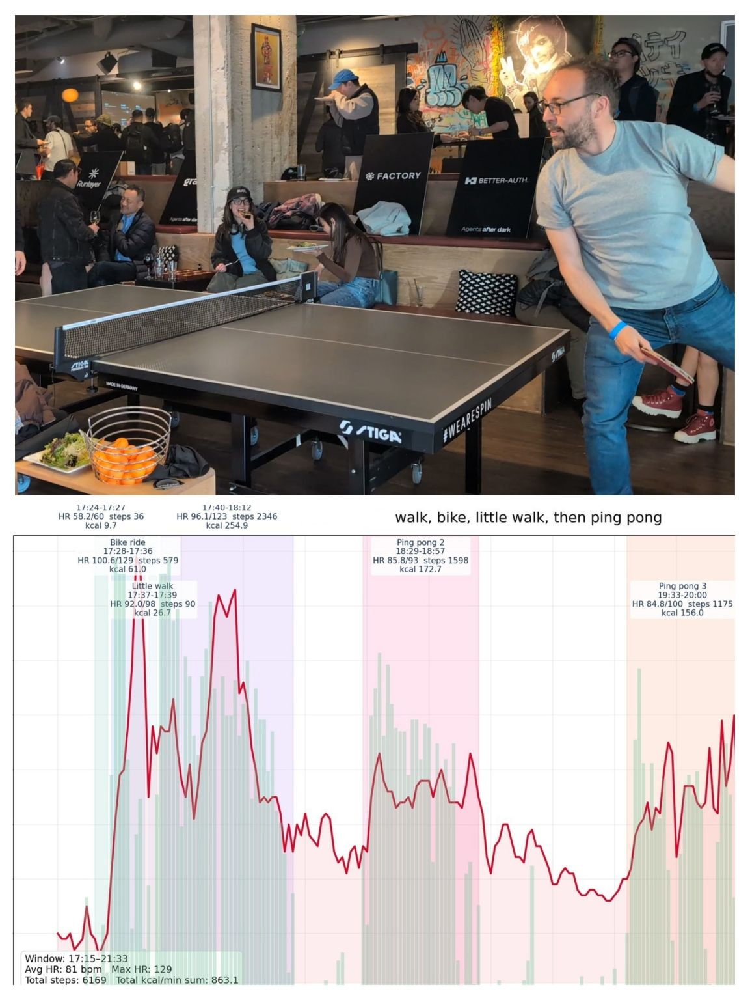
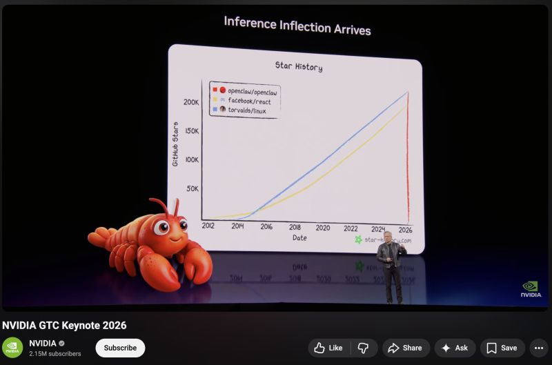
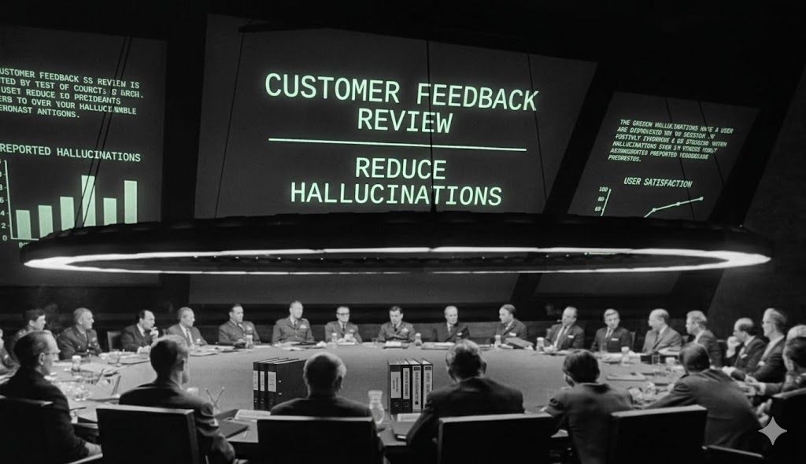
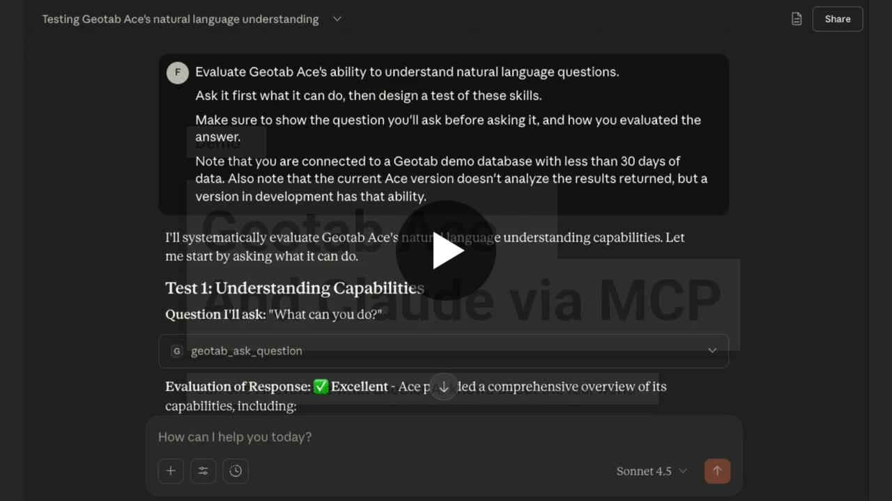
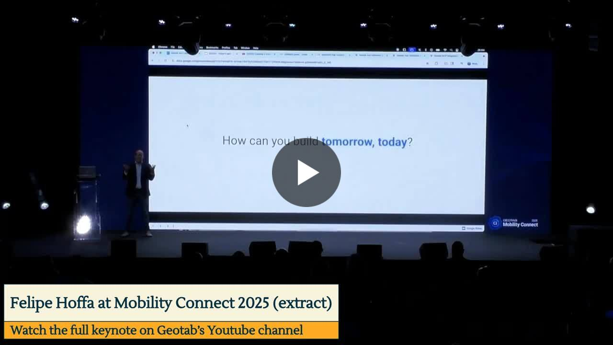

Felipe Hoffa
Cloud, data, AI, developer tools, and practical experiments.
Homepage
A small landing page for projects, experiments, and writing.
Projects
Google Cloud Next 2026 unofficial scrape
A public project that reorganizes conference session data into a more useful browsing experience, including filters, trends, and analysis.
Geotab vibe guide
A guide and resource collection for exploring ideas, workflows, and experiments around Geotab.
LinkedIn posts
A few posts on AI, data, conferences, tools, and experiments.
 Is MCP dead?
Comparing Google Cloud Next 2025 vs 2026 session catalogs and the rise of MCP, A2A, and agent protocols.
Is MCP dead?
Comparing Google Cloud Next 2025 vs 2026 session catalogs and the rise of MCP, A2A, and agent protocols.
 With 1,000+ sessions, 89% are about AI
Key trends from Google Cloud Next 2026.
With 1,000+ sessions, 89% are about AI
Key trends from Google Cloud Next 2026.

Traffic, fleets, and my own telematics Connecting fleet thinking to personal metrics and OpenClaw experiments.
What's your OpenClaw strategy? Reflections after the first 10 days using OpenClaw.
How I learned to stop worrying and love the hallucination A practical take on AI limitations and how to work with them.
Can one AI evaluate another AI? Using Claude to test Geotab Ace on real fleet data.
Building with MCP and Geotab ACE From raw GPS points to instant insights. 7 out of 10 LLMs got this wrong
A small test of model reliability on a simple geography question.
7 out of 10 LLMs got this wrong
A small test of model reliability on a simple geography question.
 BigQuery vs Snowflake vs Databricks
A community-health comparison through subreddit activity.
BigQuery vs Snowflake vs Databricks
A community-health comparison through subreddit activity.
 I don’t usually show up late at night to a stranger's house
A memorable conference travel story.
I don’t usually show up late at night to a stranger's house
A memorable conference travel story.